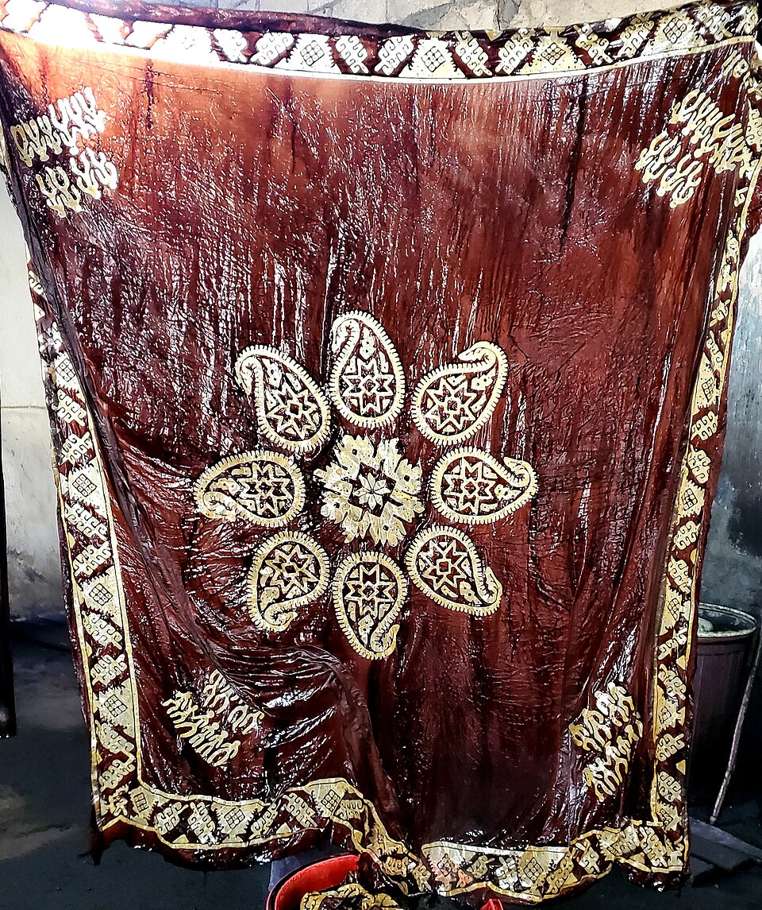
Kəlağayı istehsalı
Bakı, Azərbaycan. Ənənəvi ipək baş örtüyü — basma texnikası. YUNESKO Qeyri-Maddi Mədəni İrs.
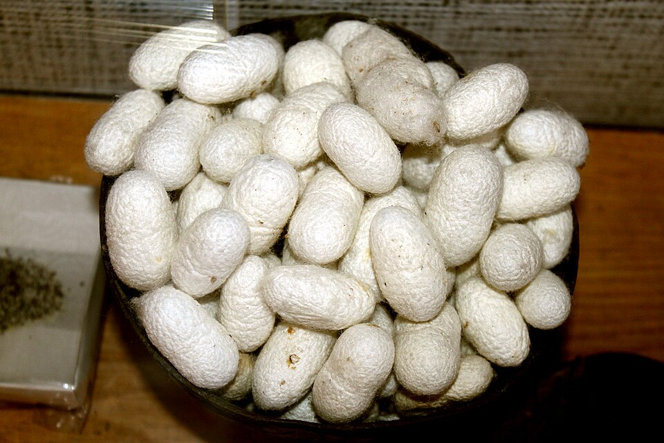
Kəlağayı basma prosesi
Ağac qəliblə ipək parçaya naxış vurulması. Əsrlərdən bəri dəyişməz texnika.
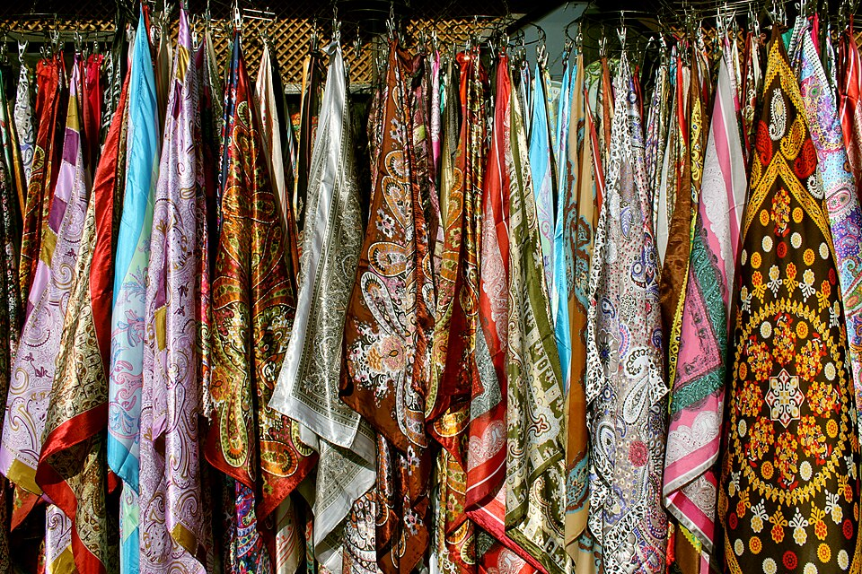
Kəlağayı nümayişi
Hazır kəlağayılar — rəngarəng naxış və dizaynlar.
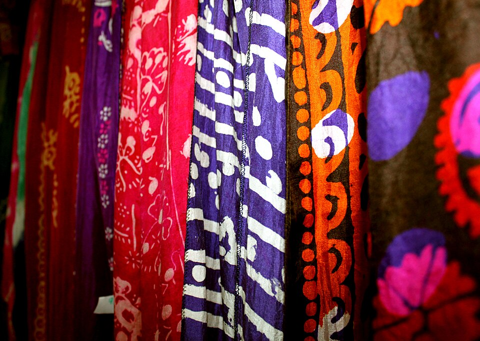
Kəlağayı qurutma
Boyanmış ipək parçaların açıq havada qurudulması.
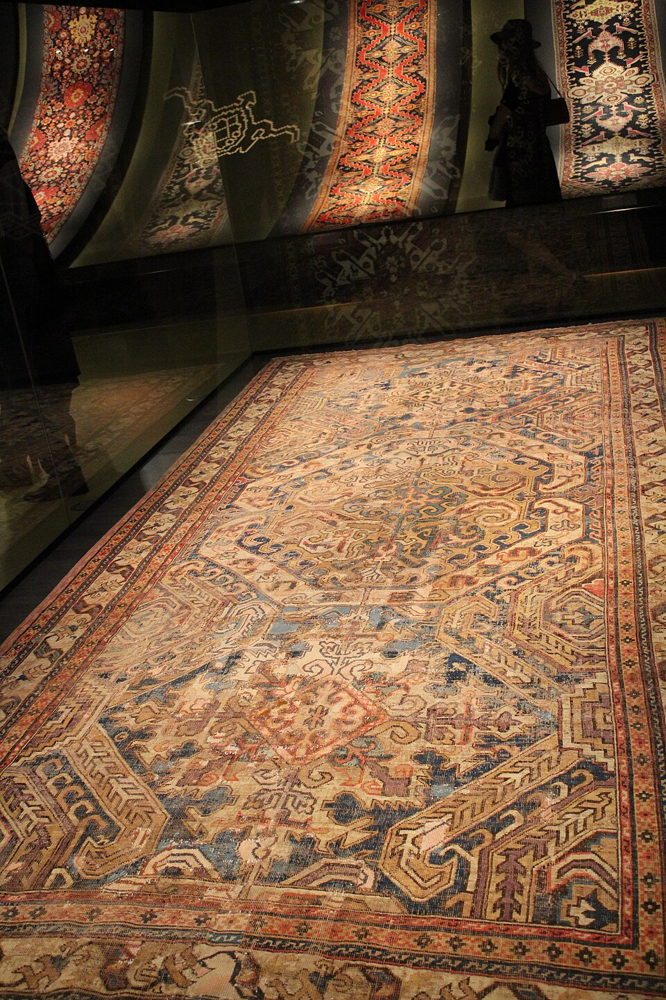
Azərbaycan xalçası
Qarabağ məktəbi, əjdahalı naxış. Azərbaycan xalça sənəti YUNESKO irs siyahısındadır.
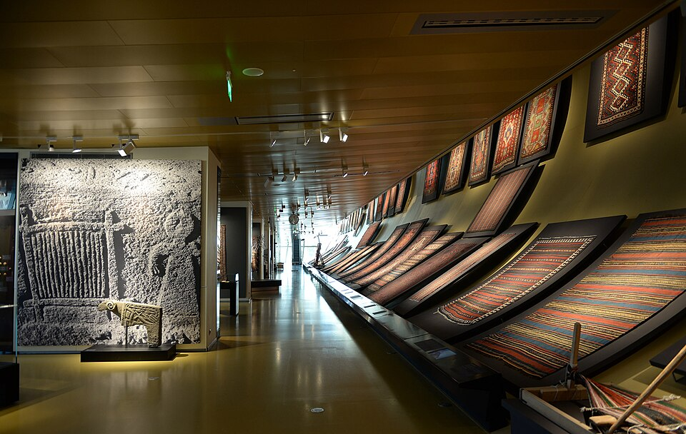
Azərbaycan Xalça Muzeyi
Bakı — xalça sənətkarlığının qorunması və təbliği.
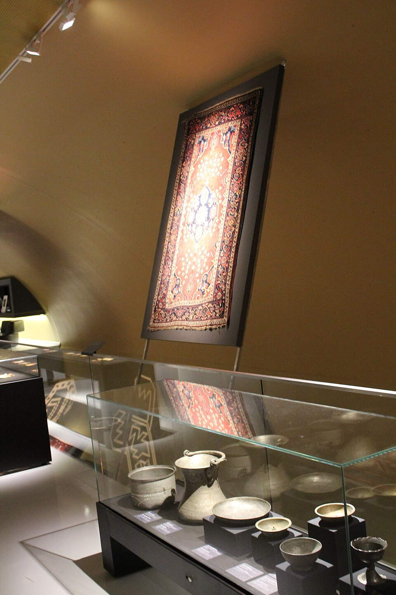
Bakı xalça sənətkarlığı
Ənənəvi Bakı xalça dizaynı və toxuma texnikası.
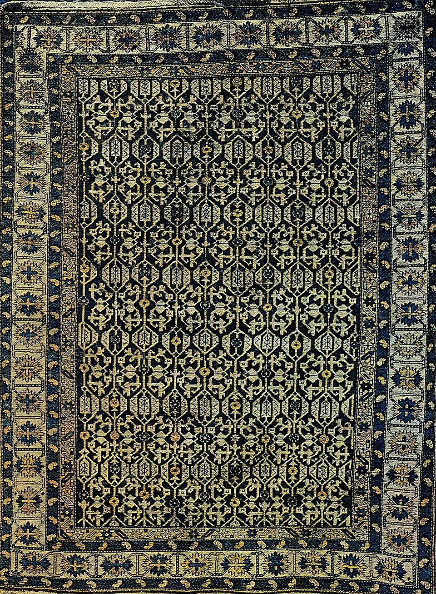
Bakı xalça kolleksiyası
Müxtəlif məktəblərin nümunələri — zəngin rəng və naxış çeşidi.

Suzani — Daşkənd
Əl tikmə, ipək saplar. Özbəkistanın ənənəvi embroideriya sənəti.
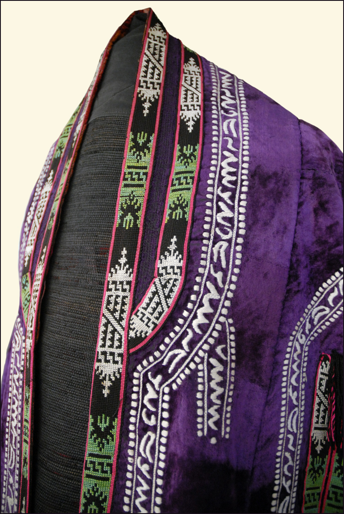
Özbək embroideriya detalı
Suzani naxışının yaxından görünüşü — ipək saplarla əl tikmə.
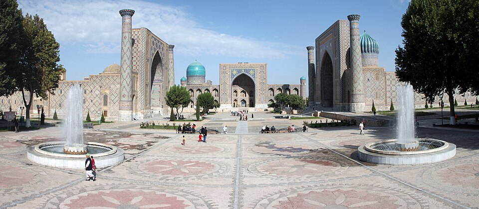
Səmərqənd — Registan meydanı
Video çəkiliş yeri. YUNESKO Ümumdünya İrsi №603 — İpək Yolu mədəni irs mərkəzi.
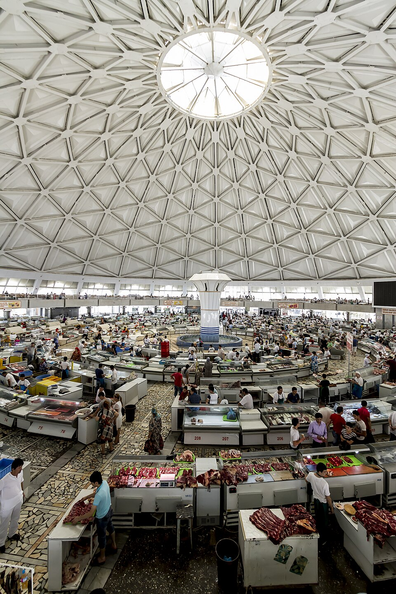
Daşkənd
Layihənin əsas fəaliyyət yeri — Özbəkistanın paytaxtı və mədəni mərkəzi.
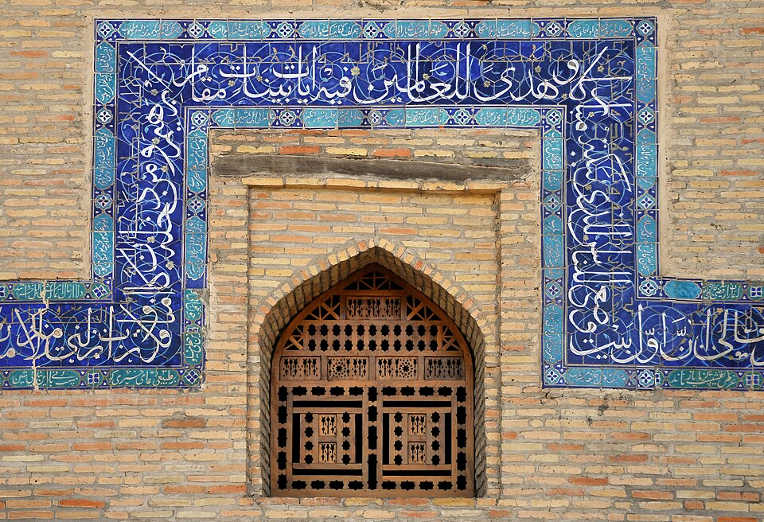
Daşkənd memarlığı
İpək Yolu dövrünün memarlıq irsi.